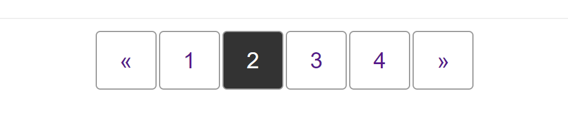

{{CSSRef}}
This cookbook pattern demonstrates the navigation pattern used to display pagination, where the user can move between pages of content such as search results.

The pagination pattern typically displays items in a row. To ensure that the pagination is understandable by people using a screenreader, we mark the items up as a list inside a {{htmlelement("nav")}} element, and then use CSS to display the layout visually as a row.
Typically, the pagination component will be centered horizontally underneath the content.
{{EmbedGHLiveSample("css-examples/css-cookbook/pagination.html", '100%', 720)}}
This pattern is laid out using flexbox — one flex container nested inside another. The {{htmlelement("nav")}} element is designated a flex container in order that we can center the list inside using the {{cssxref("justify-content")}} property.
The list itself also becomes a flex container to lay the items out as a row. To space the items out we will use a {{cssxref("margin")}} on the flex items.
Once the {{cssxref("column-gap")}} property has implementation in browsers this could be used instead of margins to space out the items.
.pagination {
list-style: none;
margin: 0;
padding: 0;
display: flex;
column-gap: 2px;
}
We want to ensure that a person using a screenreader understands what this navigation does, and where they will go when clicking a link. To help with this we have added aria-label="pagination" on the <nav> element.
We have also added some additional content that would be read by a screenreader but is hidden visually, and set the aria-hidden attribute on the paging arrows.
The "See Also" section at the end of this document has links to related accessibility topics.
The various layout methods have different browser support. See the charts below for details on basic support for the properties used.
Include the compat data for key properties you used, as in the example below which includes align-items.
{{Compat("css.properties.justify-content")}}
{{Compat("css.properties.column-gap.flex_context")}}